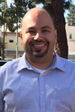
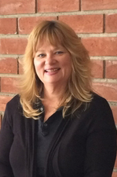
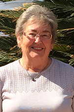
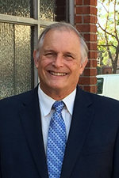

Reverend Bill Johnson is a passionate preacher of the Gospel whose gifts for ministry include leadership, teaching, and prophetic insight. He served four local congregations in California, including two start-up churches, until God called him to ministry as a full-time evangelist. He joined our staff in
For the past 10 years, Pastor Bill served as the Executive Director of Lift Ministries. In 2011 Pastor Bill was part of a team that traveled to Ghana to teach spiritual leadership for local pastors and laity, and had the opportunity to preach several times in local churches. He returned to Ghana in 2013, 2014 and again in 2015 with a team to continue training in leadership development and disciple-making.
Pastor Bill is married to Dr. Judy Johnson, a licensed educational psychologist; they have three adult children and two grandchildren. He earned a Bachelor of Arts in Studio Art from the University of Redlands and holds a Master of Divinity from the Claremont School of Theology. Pastor Bill is an avid cyclist and enjoys painting.
Peter Joseph
Director of Faith Formation

Peter Joseph heads up work with children and youth from toddlers through college/career. He joined our staff in
. On
, he was made full time, and with that his portfolio has grown to the Media/Communications Ministry Teams (website, social media, and a/v sound and worship), leading the Lay Visitation Team for our our shut-ins and for congregants in the hospital, as well as pastoral duties as needed by the Senior Pastor.
Peter's parents moved to the United States from Egypt. He was born here in Southern California and grew up in Orange County. He felt God calling him to full time ministry about 20 years ago, after he completed a degree in Biological Sciences at Univeristy of California, Irvine in 1997. He received his Master of Divinity from Fuller Theological Seminary in 2001.
Peter has worked in non-denominational, Episcopal, Presbyterian and United Methodist Churches as a youth pastor and assistant pastor of congregational care, as well as visiting 26 countries with the mission organizationRoyal Servants International.
He is joined by his wife, Bonnie, a clinical social worker at Patton State Hospital in San Bernardino, their 5 year old daughter, Julia Grace, and infant son, Noah Liam. Peter's hobbies are playing and watching basketball, attending rock concerts, traveling, reading, and spending time with his children. He has a passion for service/missions, and teaching.
Karen Mendoza
Administrative Office Manager

Karen has served in the Christian Mental Health Profession for over 20 years, both as an Administrator, Women's Group Leader and as a peer counselor in various Christian Program such as New Life Ministries, Genesis Biblical Counseling, and conducted support groups for women.
Karen received her Bachelor of Arts in Sociology from Vanguard University and is currently studying for her Certification as a Biblical Counselor. She joined our staff in
Karen is the oldest of 5 girls and has been married to Ken for 11 years. They are parents to a Maltese dog named Abigail. Karen enjoys learning new things, reading, entertaining friends, and walks at the beach with her husband.
Carol Rathbun
Communications Secretary
Carol Rathbun is a Southern California native, graduating from El Dorado High School in Placentia and the University of California, Irvine where she received a Bachelor of Arts, majoring in Dance. She loves animals, the beauty of nature and would love to visit some of our amazing National Parks. She enjoys cooking and baking and is always up for breakfast for dinner.
Carol does all our newsletters, worship bulletins, and flyers promotions for our events.
Music is a big part of Carol’s life as she enjoys everything from singing in our church choirs to attending rock concerts. Her favorite sport is baseball and she is a big Angels fan. She joined the staff here at FUMCO in
and her favorite scripture is Philippians 4:13, I can do all things through him who strengthens me.
Sylvia Coussa
Bell Choir & Hand Chimes Director

Sylvia has been directing the Hand Bell program at FUMCO since 2006. She restarted the Bell Choirs after several years of having no Bell Choir program at the church. In 2015, she started the Children's Hand Chime Choir.
She has participated in many different aspects of church music her whole life. This includes both vocal and instrumental aspects. Sylvia was a church organist for over 25 years, and she has sung in church choirs since childhood. To Sylvia, the planning and preparation of music to be used in a worship service is a very spiritual and rewarding experience. Her belief is that the musicianship and readiness of each member of the bell choir is important, but more importantly is the realization that they are in a leadership position for each person in worship.
Sylvia earned a Bachelor's Degree from Long Beach State and a Masters degree from Azusa Pacific. Mrs. Coussa was credentialed for teaching grades K-8. She retired from teaching in 2001.
In her spare time, Sylvia enjoys reading, crossword puzzles and gardening.
Michael Short
Music Director

Michael has been the Director of Music at FUMCO since
. He directs the Sanctuary Choir and Skyword Gospel Choir and plays guitar in the Praise Band.
Mr. Short is the "Director of Choral Activities" at Orange High School, and is the Founding Director of the Orange Community Master Chorale. He received his Bachelor of Music degree from Chapman College in 1979 and his Masters in Choral Conducting from California State University Fullerton in 1987.
Mr. Short is married to Vicki, and they have two adult children.
Joseph Schubert
Organist
Joseph has been the Organist at FUMCO since
Mr. Schubert is the choral director at Orangeview Jr. High School in Anaheim. He has earned two Bachelor degrees from California State University at Fullerton, Music Education (
), Organ Performance (
) and holds a Masters degree in Choral Conducting from Cal State Los Angeles. He is currently completing his work on his PhD.
Mr. Schubert is married to Terri, and they have two adult children.
Christopher G. Simpson
Praise Band Director
Chris has been the Director of the FUMCO Praise Band since
. He has held various positions on FUMCO's staff including Organist from
thru
, Hand Bell Choir Director, and interim Choir Director. He continues to support our music ministries and staff in a number of ways including as a substitute organist.
Mr. Simpson is Vice President and CEO of the Automobile Club of Southern California. He received his Bachelor of Business Administration Degree from the University of Phoenix in 1998.